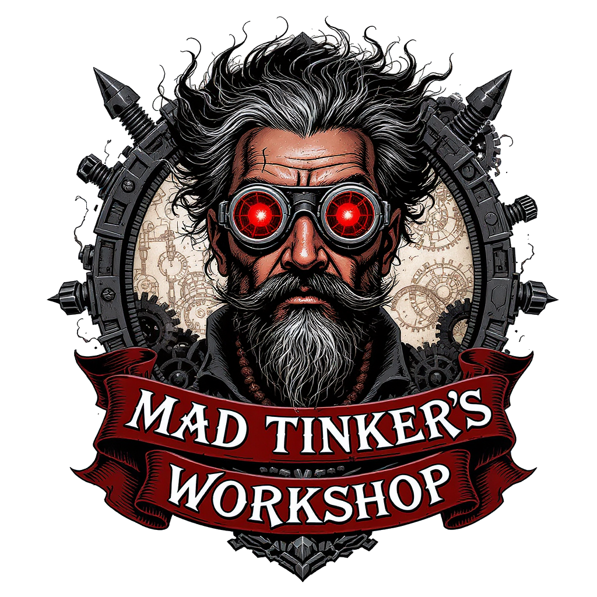

Mad Tinker's
Workshop
UAT Program Boards
U.S. Army veteran, maker, and multi-discipline fabricator pursuing three degrees at the University of Advancing Technology. This portfolio documents program objective evidence across Digital Maker & Fabrication, Robotics Engineering, and Artificial Intelligence.